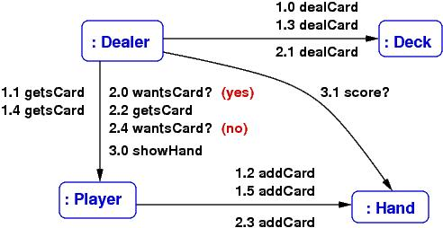
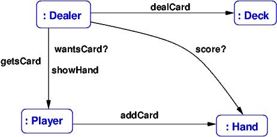
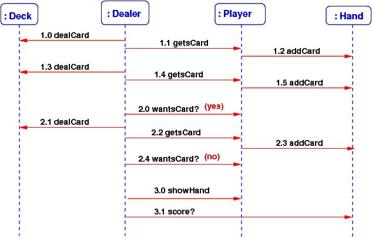
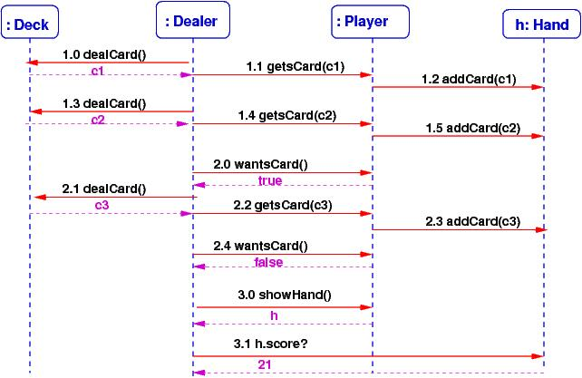

Course Notes — CIS 501: Software Architecture and Design, Fall 2014
Where do object and class diagrams come from? We now study a way to discover them.
When someone wants a machine built, they tell us how they want the machine to behave when they use it. They give us examples, and we develop the machine’s structure and control from the examples.
An example behavior is called a use case. A use case is a “round of play” of a game, or a “session” with a tool, or a “transaction” with a reactive system. It is the input-output description of the system we must build. It describes external behavior.
Example: a use case of a candy-bar vending machine goes like this:
A use case describes external behavior, from the user’s perspective. But there is also the internal behavior that occurs from the machine’s perspective. When we include the latter into the use case, we have a use-case realization that tells us how the machine operates. It is the “high-level algorithm” of the system we must code. For the candy machine, the use-case realization might go like this:
human inserts bill
The machine’s bill slot rolls the bill under a scanner that checks the authenticity and the value of the bill. The value goes to the machine’s money controller, which tells the machine’s “database” how much money was inserted. The controller also enables the appropriate buttons for candy bars. The bill drops in the money box.
human presses button with picture of candy next to it
The button-press event notifies the button’s controller for the selected candy bar. The button’s controller tells the database to subtract the price of the bar from the amount deposited, and it also tells the candy-bar bin to release one bar (which it does — we hope!) A signal/event goes to the change-box to issue coins for change (which it does — we hope!). Signals go to all button controllers to disable the buttons for candy bars.
matching candy bar falls out of machine and onto floor
The use-case realization talks about entity objects, both hard(ware) and soft(ware); multiple controllers for money and buttons and change; a money box and a “database”; and buttons and pictures of candy bars (the machine’s boundary entities — the “view”).
Notice that the use-case realization uses nouns that name the internal components and active verbs that state the actions the components take. (Example: “The button’s controller tells the database to subtract the price of the bar....”)
When we write a use-case realization, we force ourselves to use nouns that name the internal components and use active verbs that state actions — the nouns suggest the classes/objects we must build, and the verbs suggest the methods we must write!
With enough use cases documented and realized, we can build a machine that does all the desired behaviors. Use-case realizations help us design the class diagram and code the classes. (In the “old days”, the use-case realizations were called “high-level algorithms” — the outlines of the code we must write.)
Here is a use-case realization of one round of a simulated Blackjack card game, where a human plays against a “house player”.
When writing the realization part, we should first think about which “entities” will be part of the realization. For a card game, this means Cards, a Deck, human and computerized card Players, and a Dealer. The use-case realization explains what the entities do:
human and house (computer) player each get two cards:
for each Player p, both human and computerized:
Dealer deals two cards from the Deck and gives them to p
Dealer checks if either player has already scored 21. If yes, the round ends here:
if human's score == 21 or dealer's score == 21,
determine the result of the round --- win, loss, tie (details supplied later);
terminate round
else continue:
human is repeatedly asked if more cards are desired. Cards are dealt till human says no or reaches 21 or “busts”:
for each Player p, first the human and then the computerized,
Dealer asks:
while p wants a card and p's hand's score <= 21 :
Dealer deals a card from the Deck and gives it to p
human sees the results:
for each Player p:
p shows its hand to the Dealer so that the Dealer can calculate
the hand's score and display the results.
Dealer compares scores of all hands and announces the winner
How do we convert this verbal use-case realization into a class diagram? Let’s consider this next:
The title says what we must do: First, we extract from our use-case realizations the entities that the software will need to operate, and we list the methods (sometimes called responsibilities) that must be coded within the entities.
Example continued:
Look at the above use-case realization.
The above decisions are not final, but they give us the start we need to make diagrams of the use-case realizations we have written:
Before we start coding classes, we should draw pictures of how the steps in our use-case realization are sequenced as method calls from one entity to the next. There are two standard diagram formats for drawing a use-case realization: communication diagrams and sequence diagrams.
A communication diagram (also called a “collaboration diagram”) is an object diagram labelled by the method calls that occur during a use-case realization. We should always draw an object diagram when we are designing a system, so it is not much extra work to make the object diagram into a communication diagram.
Here is a simplified version of the previous use-case realization for a round of card play (we will assume that no player scored 21 at the start):
The diagram that shows the communications between Dealer, Deck, Player, and Hand might go like this:
The labels on the arrows are method calls; for example, 1.0 dealCard states that as the opening action for (1) above, the Dealer object calls the Deck object’s dealCard() method — so, we must define method, dealCard, in class Deck, so that Dealer can call it. The numbering lets you follow the sequence of calls that realize the use case. The diagram lets see which methods should be coded in which classes.
In this way, a communication diagram almost maps out the code that we write.
You can always add more details to the communication diagram, say, add the arguments to the method calls and the answers that are returned (draw some back arcs), if this helps you better understand how to design the system.
Also, you can always state fewer details in the communication diagram, for example, just list the methods that are called during all the steps of the use-case realization:
This gives you lots of clues for drawing the class diagram.
A communication diagram can get crowded with lots of method calls on its arcs. A sequence diagram shows the method calls in a linear order — many people find this easier to read. A sequence diagram is also useful when there are tricky sequences of calls (such as circular calls – “call backs”, iterations of calls, etc.) Here is the sequence diagram for the above example:
Since there is more room to list the method calls, it is easy to label them with their arguments and returned answers, like this:
From a sequence diagram, you should be able to draw the communication diagram, and vice versa.
Communication and sequence diagrams are important documentation tools for a finished system. So, even if you do not find them so helpful for design and coding, you might draw them so that you can more easily explain your work to your colleagues.
If you have listed a proper range of use-cases of a system, and if you have written the use-case realizations, and if you have drawn the communication diagrams of the realizations, then you are ready to draw the system’s class diagram. First, a communication diagram is an object diagram — just erase the method names from the arrows!
The class diagram is drawn by extracting from the communication diagrams the names of the entities and making them into classes. The method-labels on the arcs are moved into the classes as methods. Next, list the fields (attributes) within the classes.
This step is not completely mechanical — you might have two distinct entities that should be instances of the same class (e.g., the 52 cards in a card game will all be constructed from the same class Card), and you might want to insert an interface or a delegate where you see the need (e.g., to mark off a subassembly, or to isolate a component, or to make a connection point for an event-handler method). But the communication diagram gives you lots of useful hints for drafting the class diagram.
Most software systems are variations on existing systems. When you are building a variant of a system that already exists, you should of course start from the class diagram you have. But when you are designing a new system or when you want to be confident about your new variation, you might follow these steps:
Ask the user to describe how the system should behave (define the use cases).
Write the use-case realizations — force yourself to use nouns that name the internal components and use active verbs that state the actions the components make — and then make lists of the the entities and actions that appear in the realizations — these are candidates for objects and methods.
Draw an object diagram whose entities come from the use-case realizations.
“Test” the object diagram by labelling its arrows with the actions that are used in the use-case realizations — this is a communication diagram. (If you want more detail, draw the corresponding sequence diagrams.)
Based on the communication diagrams, draft a class diagram.
Now you are ready to discuss data structures, algorithms, models, views, controllers, and implementation techniques.
By the way, the techniques outlined in this Lecure Note are sometimes called (Booch-Rumbaugh) object-oriented design — a computer system is designed from use-case realizations as a collection of objects that communicate via method calls.
If a software system is built solely from use-case realizations, such that
then we are practicing a form of agile development, where the software is usable quickly and “grows” according to the demands of its users.
It takes a lot of experience to do well agile development (and frankly, C# is not the best language for doing it), but if you have good skills at using interfaces and delegates, you can make it happen.
References
Here are two some references about communication and sequence diagrams:
This note was adapted from David Schmidt's CIS 501, Spring 2014, Lecture 7 course note. © Copyright 2014, David Schmidt.